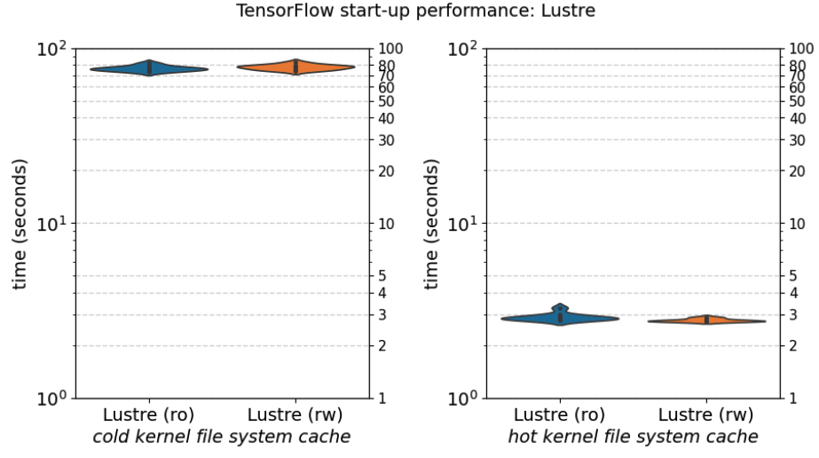
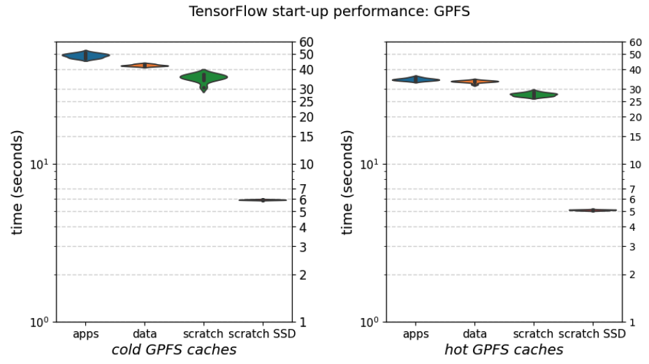

Performance aspects of CernVM-FS¶
One aspect we can not ignore in the context of software on HPC infrastructure is performance (the P in HPC).
Start-up performance¶
When installations of scientific software applications are provided via a CernVM-FS repository, the main performance metric to worry about is start-up time: the amount of time it takes until an application can start running. This requires that not only the binary program that is being launched itself is somehow available on the system (on disk, in memory, etc.), but also that all files required by it (libraries, dependencies) are available, including the ones they require in turn, etc.
Parallel filesystems like GPFS (now IBM Storage Scale) and Lustre, which are ubiquitous on HPC systems, are notorious for not performing well in this respect, which is not surprising since they mainly target a very different use case: large-scale high-performance I/O on large datasets.
This has led to to all sorts of creative workarounds for "the startup problem", including for example tools like Spindle, and recommendations to not install (in particular Python) software directly on the parallel filesystem but to use a container image instead (see the documentation of the current flagship EuroHPC system LUMI).
A note on the presented performance results
The start-up timing results shown in this section are by no means meant to be a statistically rigorous study of software start-up time.
That said, these results should be indicative of what you may see on production HPC systems, and give a good view on the start-up times that you will observe for software provided via CernVM-FS, relative to alternatives like GPFS, Lustre, NFS, local disk, etc.
More details on the experimental setup are available at the end of this section.
Test workloads¶
We will present and discuss the start-up timing results for software installed in different file systems, when being accessed under different circumstances, using two small workloads:
- Start-up of TensorFlow:
python -c 'import tensorflow'(see details below) - MPI startup (
MPI_init), viaosu_initmicrobenchmark (see details below)
Cache status¶
The status of the Linux kernel file system cache, and the CernVM-FS client cache (when relevant) is a key factor in start-up performance.
We discriminate between 3 scenarios: cold cache, hot cache, and warm cache.
Cold cache¶
Hot cache¶
Warm cache¶
Performance results¶
TensorFlow start-up¶
Local filesystems¶
https://tacc.utexas.edu/use-tacc/software-list

Parallel filesystems¶


CernVM-FS¶


MPI start-up¶
Test configuration details¶
A multitude of different system configurations is considered to evaluate start-up performance of the test workloads.
Client system¶
The client system used in the tests is a worker node of the HPC-UGent Tier-2 cluster "doduo", with two exceptions:
- When testing NFS, the HPC-UGent Tier-2 cluster "victini" was used instead;
- When testing Lustre, the VSC Tier-1 cluster "Hortense" was used instead;
(see System configurations below for more technical details)
Software stack¶
Software installations being used are available via either:
- a GPFS filesystem, directly attached to the cluster via a high-speed network;
- a Lustre filesystem, directly attached to the cluster via a high-speed network;
- an NFS mount of a GPFS filesystem, via a 10Gbit Ethernet connection;
- CernVM-FS, with:
- with a client cache on local disk (SSD,
ext4), or in RAM disk (/dev/shm); - without and with (only) a (private) proxy server in the local network;
- without and with (only) a private Stratum 1 replica server in the network;
- with (only) a specific public Stratum 1 replica server: one in AWS
eu-westregion, another in Azureus-eastregion;
- with a client cache on local disk (SSD,
(see System configurations below for more technical details)
Test workload details¶
We will present and discuss the start-up timing results for software installed in different file systems, when being accessed under different circumstances, using two small workloads:
- Start-up of TensorFlow (
python -c 'import tensorflow') - MPI startup (
MPI_init, viaosu_initmicrobenchmark)
TensorFlow¶
We evaluate the start-up performance of TensorFlow, which is considered to be a representative example of a scientific workload implemented in Python, which is a tremendously popular programming language in scientific research. We used TensorFlow version 2.13.0, installed with EasyBuild v4.8.2, on top of Python version 3.11.3, which is available in EESSI.
Before starting TensorFlow we first load the module to update the environment such that TensorFlow is available:
module load TensorFlow/2.13.0-foss-2023a
To evaluate the start-up performance of TensorFlow, we simply run:
python -c 'import tensorflow'
Timing information is collected using the GNU time command, as follows:
/usr/bin/time --format '%e' python -c 'import tensorflow'
Required files¶
Based on the statistics for and contents of the CernVM-FS client cache after running the specified command,
starting from a cold CernVM-FS client cache, we know that importing the tensorflow Python package:
- triggers ~11,000
open()calls + ~1,500opendircalls (which includes non-existing paths); - requires ~3,500 files, including:
- ~2,200 files from the TensorFlow installation itself (~94%
*.pycfiles); - ~1,300 files from Python packages outside of the TensorFlow installation directory,
of which ~76%
*.pycfiles, ~14% shared libraries (.so); - ~30 files from the EESSI compatibility layer;
- ~2,200 files from the TensorFlow installation itself (~94%
As such, this is a challenge for parallel filesystems like GPFS and Lustre, as the results will show.
MPI_Init¶
Experimental setup¶
System configurations¶
HPC-UGent Tier-2 cluster 'doduo'
Hardware:
- Dual-socket AMD EPYC 7552 CPU (AMD Rome, 96 cores in total)
- 256GB of DDR4 RAM memory
- 240GB SSD local disk (
ext4) - HDR-100 InfiniBand interconnect
Operating system:
- Red Hat Enterprise Linux 8.8
- Linux kernel
4.18.0-477.27.1.el8_8.x86_64 - GPFS (IBM Storage Scale) version 5.1.8-2 (
pagepool=4G,maxStatCache=1000,maxFilesToCache=4000) - CermVM-FS 2.11.2
(see also HPC-UGent Tier-2 infrastructure overview)
HPC-UGent Tier-2 cluster 'victini'
Hardware:
- Dual-socket AMD EPYC 7552 CPU (AMD Rome, 96 cores in total)
- 256GB of DDR4 RAM memory
- 240GB SSD local disk (
ext4) - 10Gbit Ethernet interconnect
Operating system:
- Red Hat Enterprise Linux 8.8
- Linux kernel
4.18.0-477.27.1.el8_8.x86_64 - NFS-Ganesha 3.5
- CermVM-FS 2.11.2
(see also HPC-UGent Tier-2 infrastructure overview)
VSC Tier-1 cluster 'Hortense'
Hardware:
- Dual-socket Intel Xeon Gold 6140 (CPU Skylake, 36 cores in total)
- 96GB of DDR4 RAM memory
- 900GB SAS HDD local disk (
ext4) - HDR-100 InfiniBand interconnect
Operating system:
- Red Hat Enterprise Linux 8.8
- Linux kernel
4.18.0-477.27.1.el8_8.x86_64 - Lustre 2.12.9
- CermVM-FS 2.11.2
(see also VSC documentation page on Hortense)
Network details
Bandwidth
Network bandwidth to HPC-UGent Tier-2 doduo cluster worker node from relevant servers,
as measured with iperf3 v3.15:
- private Squid proxy server in HPC-UGent network: ~22,500 Mbits/sec
- private Stratum 1 replica server in HPC-UGent network: ~940 Mbits/sec
- EESSI Stratum 1 replica server in AWS
eu-westregion: ~930 Mbits/sec - EESSI Stratum 1 replica server in Azure
us-eastregion: ~280 Mbits/sec
Server-side iperf3 command: iperf3 -V -s -p 80
Client-side iperf3 command: iperf3 -V -c SERVER_HOSTNAME_OR_IP -p 80 -f m
Latency
Network latency between HPC-UGent Tier-2 doduo cluster worker node and relevant servers,
as measured with tcptraceroute v2.1.0-6:
- private Squid proxy server in HPC-UGent network: ~0.2 ms
- private Stratum 1 replica server in HPC-UGent network: ~0.7 ms
- EESSI Stratum 1 replica server in AWS
eu-westregion: ~14 ms - EESSI Stratum 1 replica server in Azure
us-eastregion: ~84 ms
Relevant commands¶
Kernel file system cache
To clear kernel file system cache:
sudo sysctl -w vm.drop_caches=3
To check file system cache usage:
vmstat -s -S M | grep buffer
CernVM-FS client cache
To clear CernVM-FS client cache:
sudo cvmfs_config wipecache
To check CernVM-FS client cache usage:
cvmfs_config stat -v
To check CernVM-FS client cache usage for a particular repository:
cvmfs_config stat -v software.eessi.io
To check size of CernVM-FS client cache on disk (path determined by CVMFS_CACHE_BASE configuration setting):
du -sh /var/lib/cvmfs